Can early performance predict a private-equity investment's eventual outcome?
I led the quantitative track on a seven-person Cornell practicum team working with a New York-based PE firm's Strategy & Analytics group [company name withheld per NDA], turning years of portfolio data into a framework for spotting risk early and testing which signals actually predict returns.
- Problem: The firm had years of portfolio data but no reliable way to know which early signals actually predicted an investment's eventual outcome.
- What I did: Led the quantitative track on a 7-person team, building a framework that separated forecast, operating performance, and investment outcome, then tested each against the firm's practicum data.
- Key finding: Early operating performance predicted downside risk far better than upside; companies missing projections by 50%+ were about 60% more likely to post a negative IRR.
- Impact: Gave the firm's Strategy & Analytics group a risk-adjusted, industry-aware framework for flagging underperformance early, instead of relying on raw forecast comparisons.
The problem
The firm had years of portfolio data (sales, EBITDA, forecasts, IRR, exit outcomes), but that volume of data didn't automatically translate into a usable investment signal.
The return dataset alone had 26,759 observations, but roughly 46% of projected IRR, 45% of projected GCoC, and about 94% of realized IRR/GCoC fields were missing. Just running correlations across that raw data would have produced misleading conclusions. We needed a framework that separated forecast from operating performance from investment outcome, instead of hunting for correlations across every variable at once.
What I was responsible for
As team lead for the quantitative analysts team, I:
- Ran exploratory analysis across the financial, return, and exit datasets: completeness, distributions, outliers, relationships between variables
- Compared historical and projected performance against what actually happened at exit
- Helped build and validate the regression models that tested our early-warning hypotheses
- Compared performance across industries and fund families using a risk-adjusted lens
- Turned statistical results into plain-language investment signals for the client, and built the visualizations that carried those findings
The modeling and client deliverables were a team effort. I'm calling out my part specifically so nothing here reads as if I built every piece of it solo.
How the analysis unfolded
Forecasts turned out to be weak predictors of returns
Operating variables were tightly correlated with each other (sales and forecasted sales, r ≈ 0.97) but projected IRR barely correlated with actual IRR (r ≈ 0.03). That single result changed the direction of the whole project; we stopped asking "which projected return looks best?" and started asking "how does a company's actual execution against its forecast change its odds of success?"
Sector performance needed a risk lens, not just an average
Ranking industries by average IRR rewarded sectors with a few lucky outliers. Instead we built a risk-adjusted return ratio (average IRR ÷ IRR volatility). Software & IT came out on top at roughly 1.46: strong returns and reasonably stable ones. Consumer Brands looked great on raw average IRR but had volatility above 1.8, which made it a much shakier bet once you accounted for risk.
We ran the same risk-adjustment on sales growth (rather than IRR) to check whether an industry's returns were actually backed by healthy business fundamentals, not just favorable exits. That second lens flipped a few rankings: Energy & Sustainability had a weak risk-adjusted IRR but the most stable underlying sales growth in the portfolio, while Consumer Brands' fundamentals looked shakier than its raw IRR suggested. Software & IT was the only sector that held up well on both measures: strong risk-adjusted returns and real growth behind them, which is why it's the one industry I'd call unambiguously attractive.
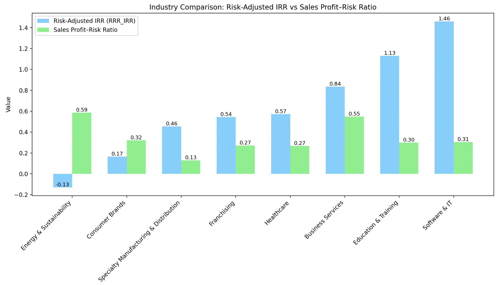
We built a standardized "early period" for every investment
Companies didn't all start receiving forecasts in the same calendar year, so comparing "2016–2018" across the board would have compared businesses at completely different points in their lifecycle. Instead, we defined Year 1 as the first year a company had a usable forecast, and looked at Years 1–3 relative to that anchor for every investment.
To measure how well a company hit its numbers in that early window, we tracked three things side by side for each metric: the target completion rate (actual ÷ forecast), the forecast deviation rate (how far off the forecast itself was), and the annual growth rate (whether the underlying business was trending up or down regardless of the forecast). Splitting those apart mattered: a company that missed its target could still be forecast error rather than a real execution problem, and the deviation rate is what let us tell the difference. Across the portfolio in the earliest window, EBITDA targets were fully met or exceeded only about 30% of the time, and sales targets about 37% of the time. Most companies land somewhere in "partially completed" or "not completed" territory even in a normal year.
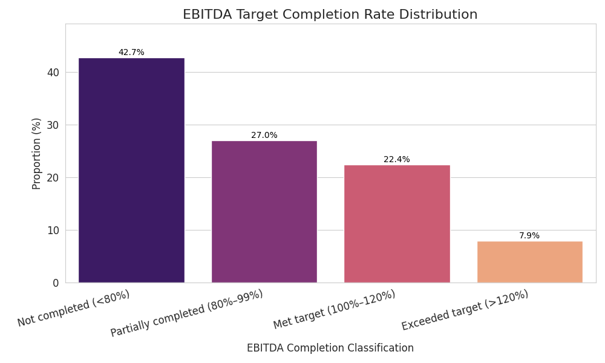
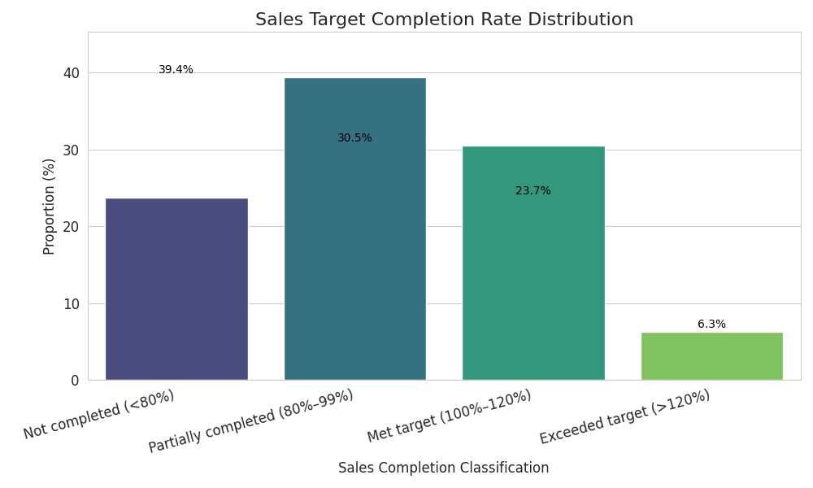
Tested whether early misses predict downside
Using logistic and Firth logistic regression (Firth handles the instability that comes with strongly separated outcomes), we found a clear, steady relationship: the worse a company missed its early forecasts, the more likely it was to end up with a negative IRR: from about 26% at "met or beat forecast" up to roughly 61% for the worst miss band. Every 10-point improvement in early performance cut the odds of a negative outcome by about 14%.
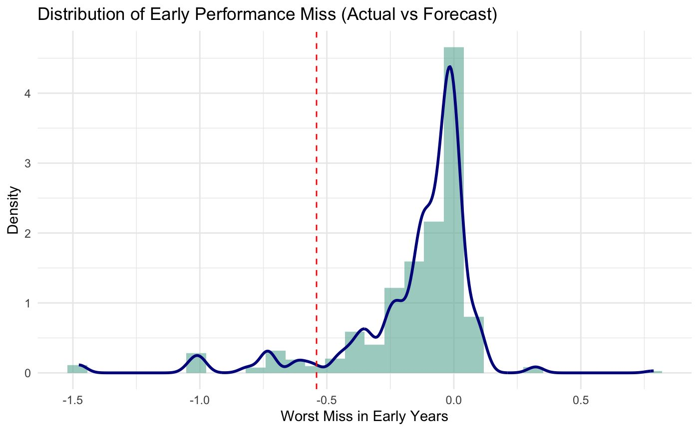
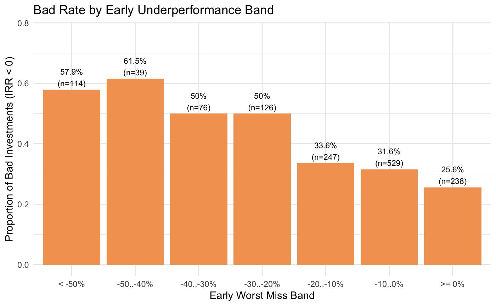
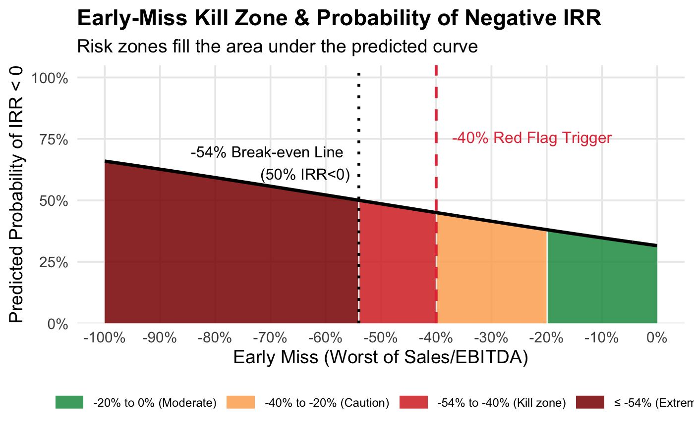
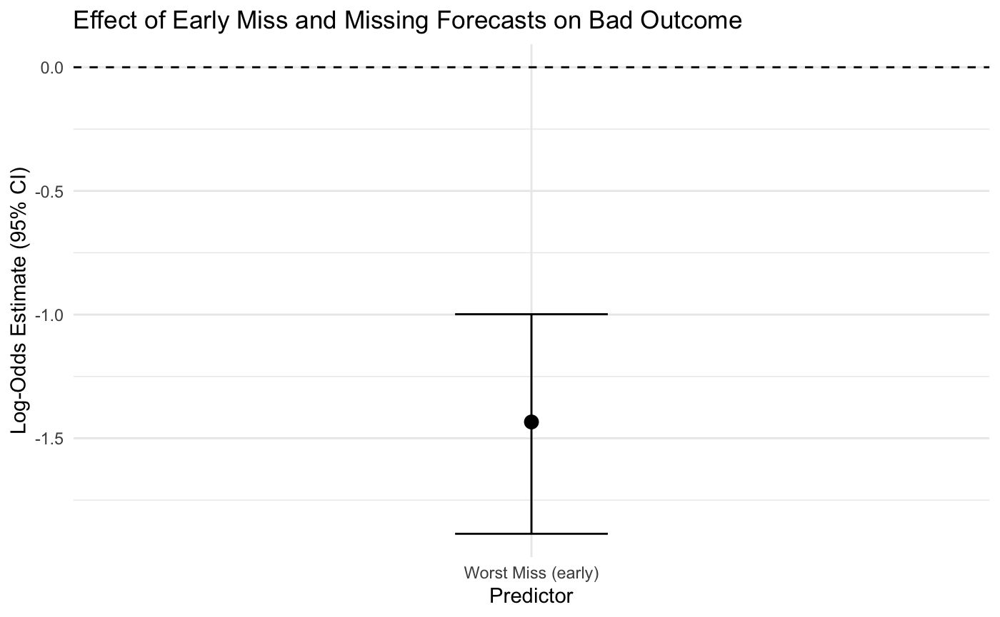
Tested the reverse, does early overperformance predict winners?
This is the part of the project I'm most proud of, because the answer wasn't the one we expected. Beating forecasts early did not reliably predict a top-tier return (IRR ≥ 25%). LASSO shrank the overperformance coefficient to zero, Ridge pushed it toward zero, and AUC across every model hovered around 0.65, which is weak. A 64% "good outcome" rate in the +10–20% overperformance band looked exciting at first, but it didn't hold up once we validated it across models. Consistency in meeting or beating forecasts turned out to be a more reliable signal than the size of any single beat.
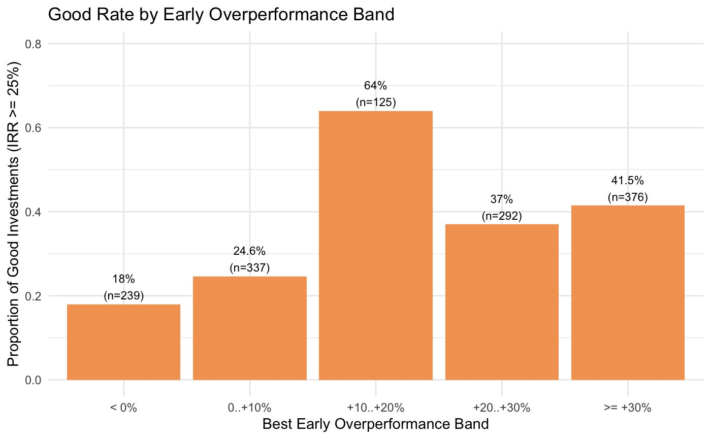
Fund families weren't allocating capital the same way, and it showed
We split the portfolio out by fund family (FF1–FF4, ranging from 184 to 895 investments each) and looked at where each one actually put its money relative to the industry strength we'd already mapped. The pattern was pretty stark: FF2 and FF4 leaned into the industries our analysis had flagged as strongest (FF2 put nearly 28% of its capital into Software & IT alone), while FF1 and FF3 stayed concentrated in the weaker, lower-growth sectors. That allocation difference lined up with a real performance gap: FF1 and FF3 both showed longer stretches with target completion rates under 85%, while FF2 and FF4 recovered faster and stabilized closer to the "met target" range.
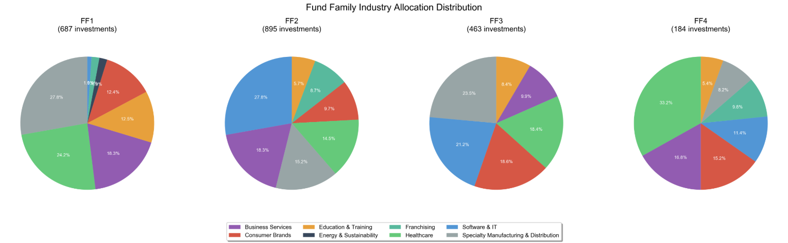
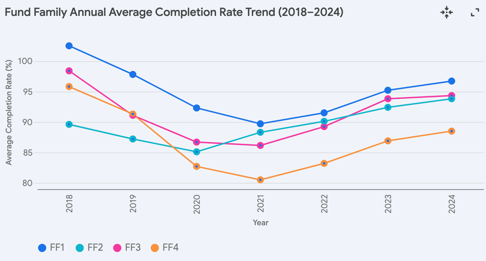
We also charted raw sales and EBITDA growth by fund family over time, mostly as a sanity check: every fund family grew in absolute terms, which you'd expect in a healthy market, but the spread between families widened every year rather than closing. That widening gap is a more useful signal than any single year's number: it suggests the allocation differences compound rather than average out.
Holding period told a related story. FF2 held investments the longest (about 7.5 years on average) while FF4 exited fastest (about 4.9 years). Combined with the allocation pattern, that reads as two different playbooks: FF2 betting long on concentrated Software & IT exposure, FF4 rotating faster through a more balanced portfolio.
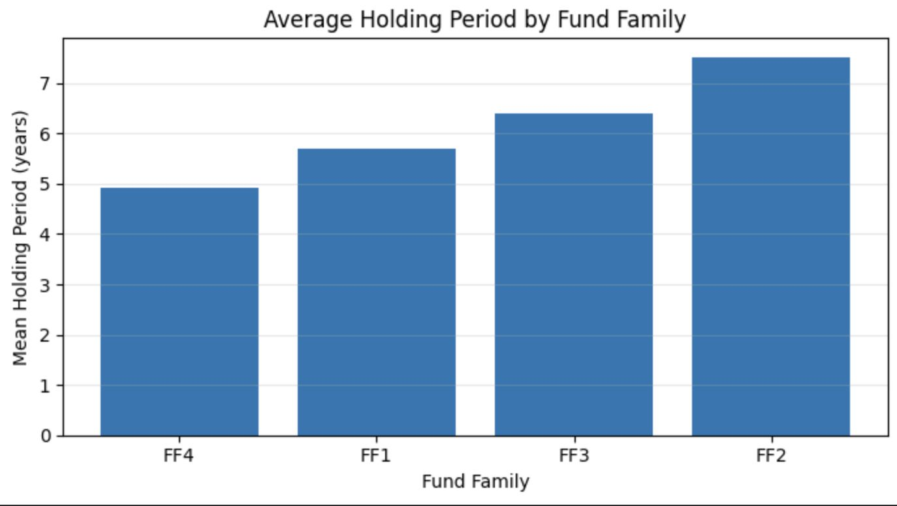
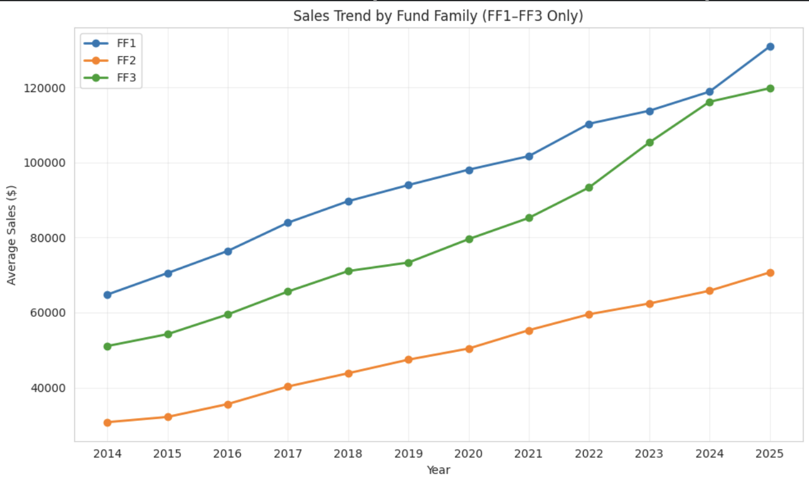
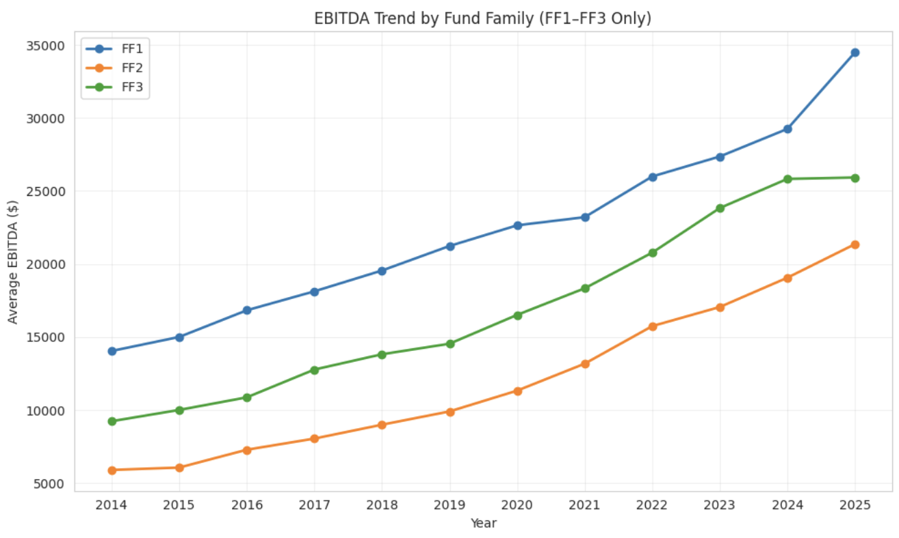
Checking the forecast-outcome link statistically
Beyond the correlation numbers, we ran a chi-square test with Cramér's V as the effect size to check whether hitting a Sales/EBITDA target was actually associated with investment success, not just loosely related to it. IRR came back significant (Cramér's V ≈ 0.25–0.28, a moderate relationship): companies that met or exceeded their operating targets clustered noticeably more often in the "exceed" and "good" IRR bands. GCoC did not (Cramér's V ≈ 0.13–0.18, weak): capital multiples looked more driven by market timing and exit conditions than by operating execution.
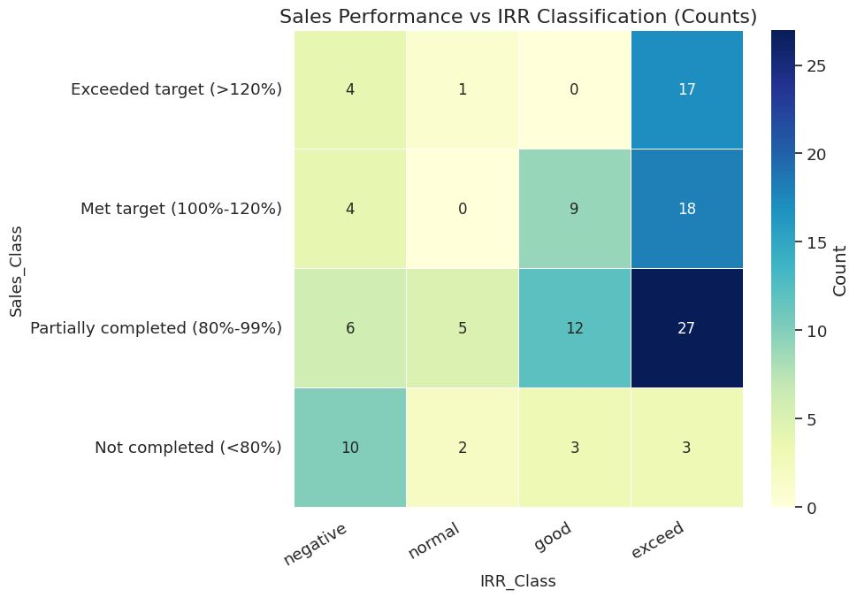
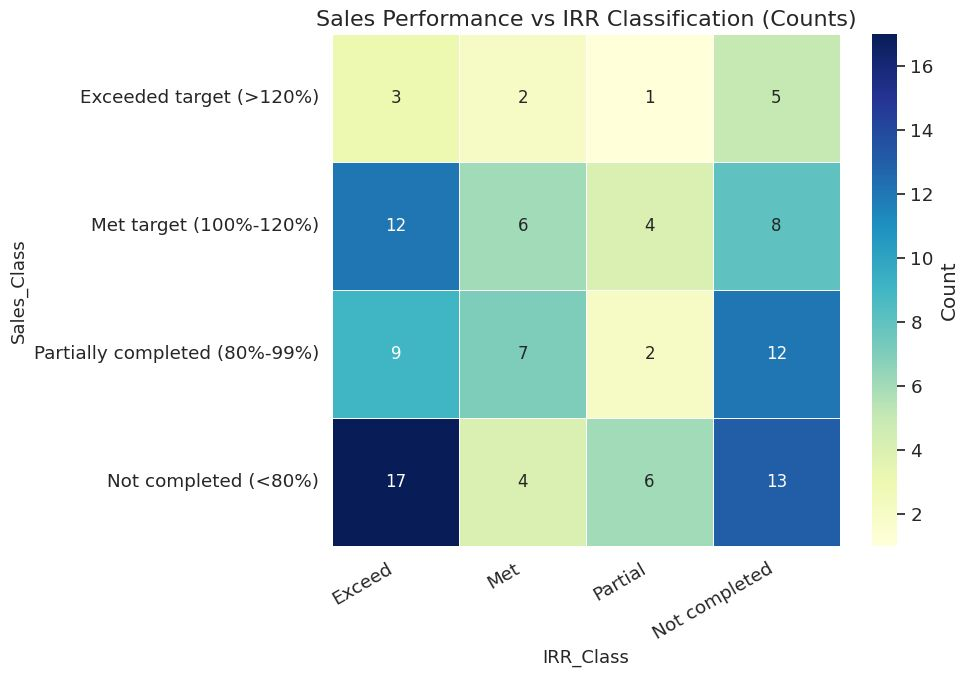
One nuance worth being upfront about: the 26,759-row longitudinal return table (heavily mismatched dates, ~94% missing on realized fields) showed almost no correlation between projected and actual IRR (~0.03). A cleaner, one-row-per-exit table (2,229 rows) showed a moderate correlation instead (~0.55). Our read is that this is a data-quality effect, not a contradiction: the noisier table drowns out a real signal that the better-matched table can see. We'd want to confirm that explicitly before leaning on it in front of a client, but it's a good example of how much the answer can depend on which cut of the data you're using.
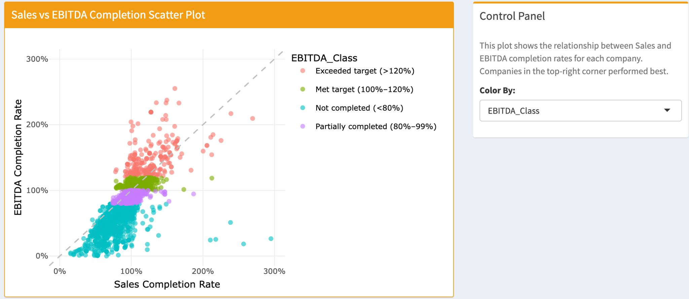
Results
What I learned
A statistically interesting result isn't automatically a useful one; that 64% overperformance band looked like a green flag until further modeling showed it didn't hold. And downside and upside genuinely are different problems: early weakness told us something real, early strength mostly didn't. Getting that distinction right is exactly the kind of finding that keeps a client from acting on a hypothesis the data can't actually support.
Where I'd tighten this up
- Build one unified investment-level table earlier, instead of repeatedly cleaning and merging across separate analyses
- Agree on a single metric dictionary (IRR, GCoC, "early period," etc.) at kickoff, before modeling starts
- Test the early-warning framework on a true holdout set or a later fund vintage, to see whether the signal generalizes
- Design the final dashboard around decisions ("which investments need attention, and why") rather than just displaying every metric we had